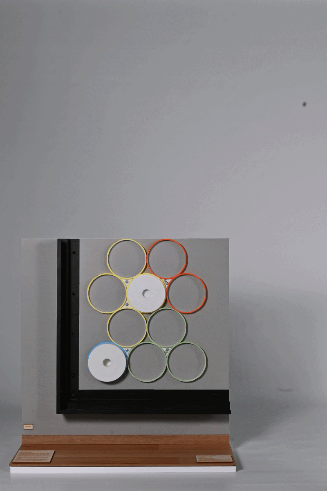
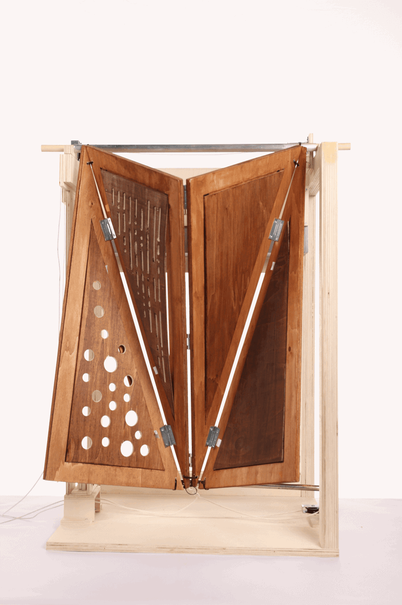
Selected work in acoustics, building physics and computational design, from MSc Building Technology and BSc Architecture.
I'm interested in the technical side of architecture. Materials, building physics and the way a design idea eventually becomes something you can actually build. During my studies I learned to work carefully and analytically, always keeping the practical side of a project in mind.
TU Delft · Faculty of Architecture and the Built Environment
Focus areasSustainable building - Building physics - Materials & detailing - Design research - Computational Design - Visualization
TU Delft · Faculty of Architecture and the Built Environment
Focus areasArchitectural Design - Building Physics - Structural Design - Climate Design - Urbanism - Building Law
Jan van Egmond Lyceum · Secondary school
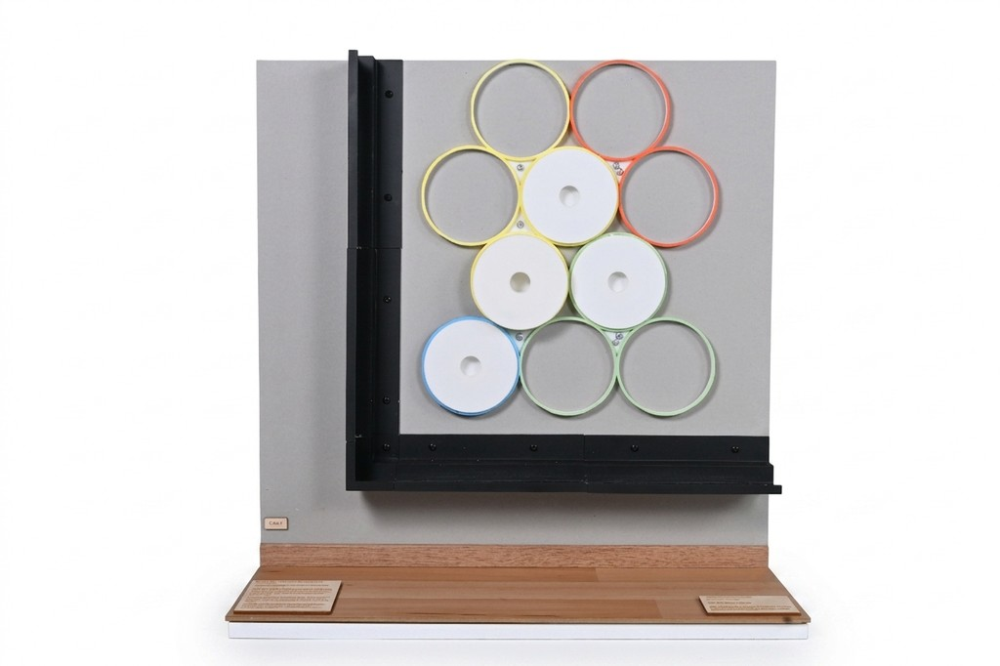
A 3D-printed acoustic metamaterial panel that absorbs low-frequency noise through geometry instead of mass.
View project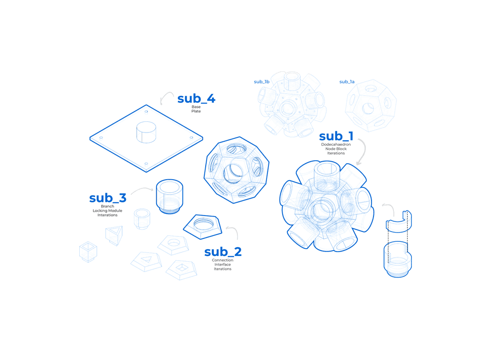
Robotic Assembly Systems using Discrete Elements
View project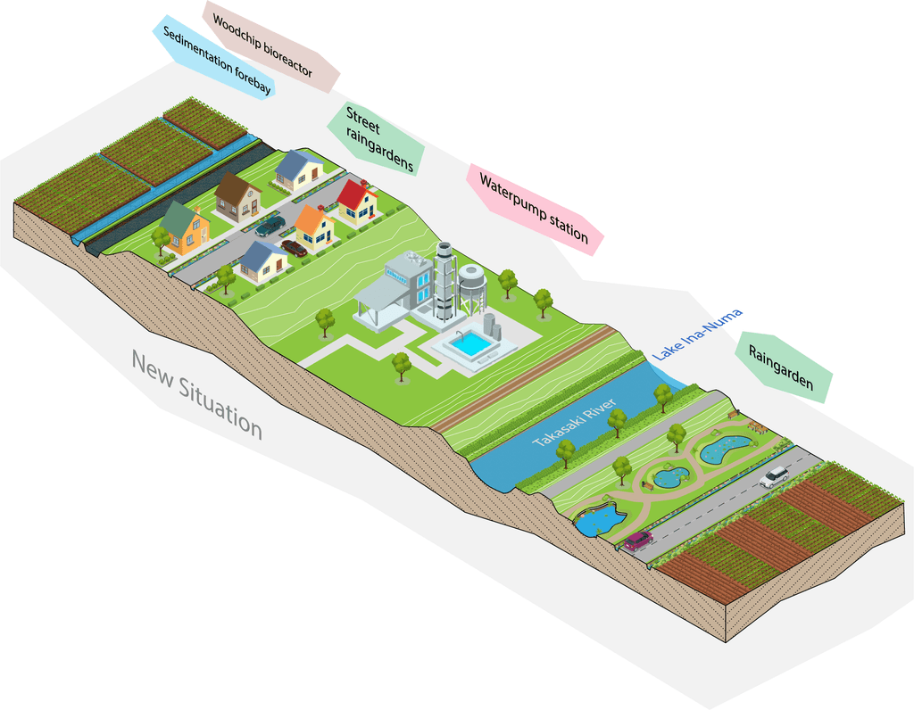
Filtering agricultural runoff before it reaches the river, cutting flood risk around Lake Inbanuma, Japan.
View project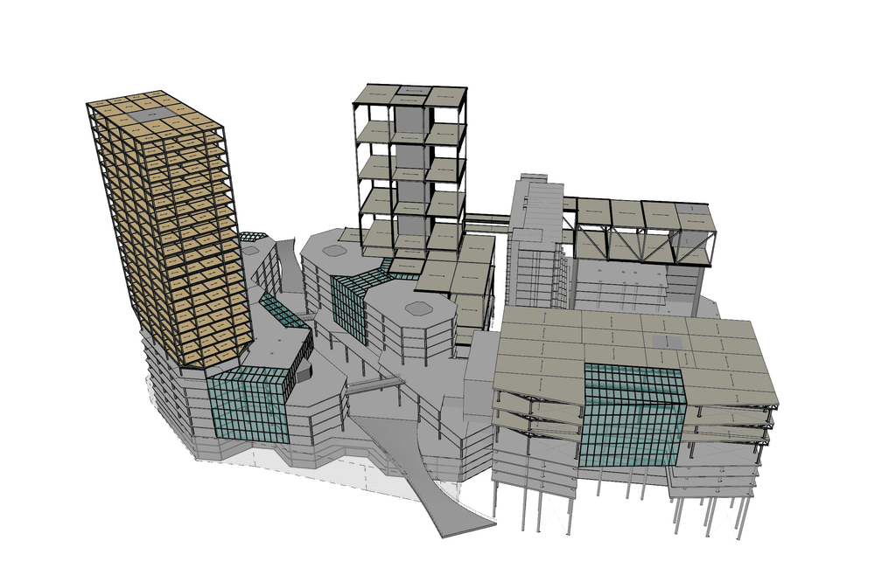
Reinforcing Hoog Catharijne's existing concrete to carry a new steel and timber highrise on top.
View project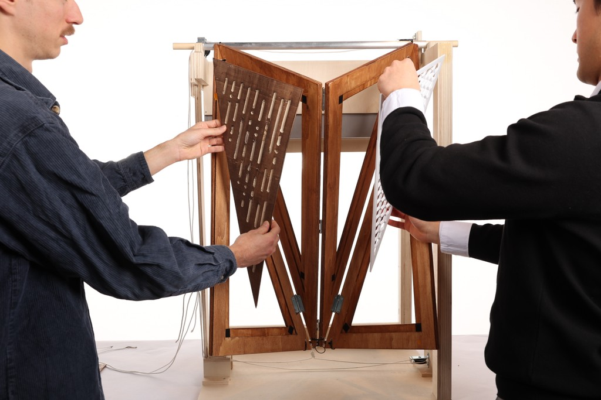
An origami-inspired façade that folds along two axes to block solar heat without losing the view.
View project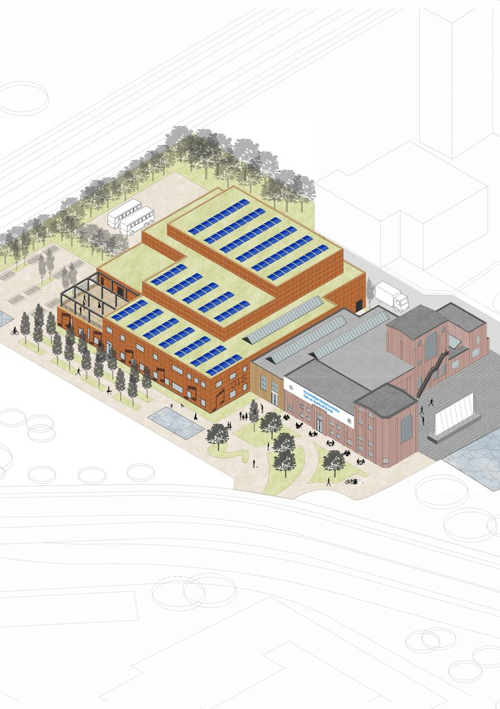
A former gin distillery becomes the heart of a new pop venue and music school in Delft.
View project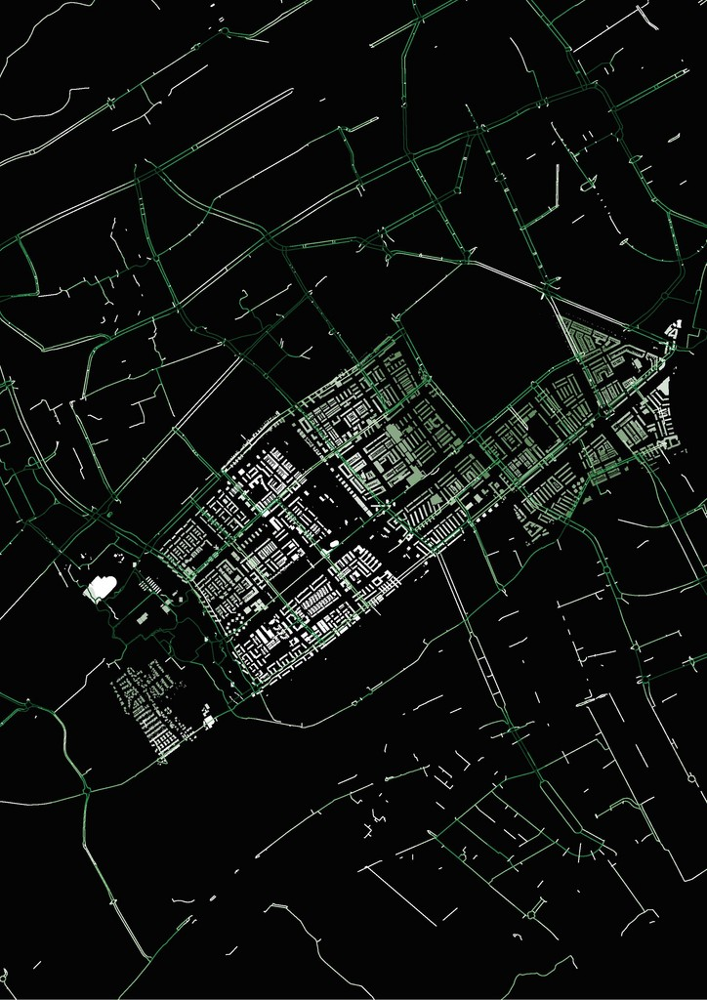
Mapping Den Haag Zuidwest to find where densification, and the infrastructure to support it, makes sense.
View project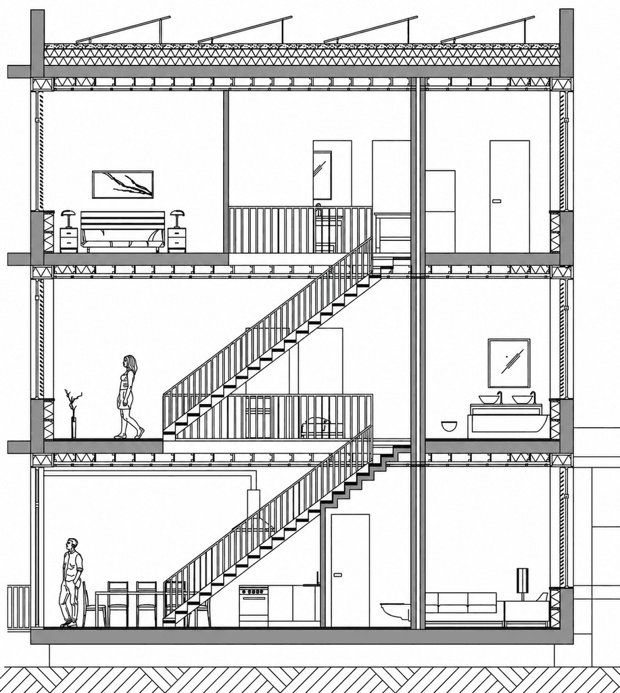
Restaurant, café and gym stay in place, wrapped in new homes and creative workspaces inside a transformed school building.
View project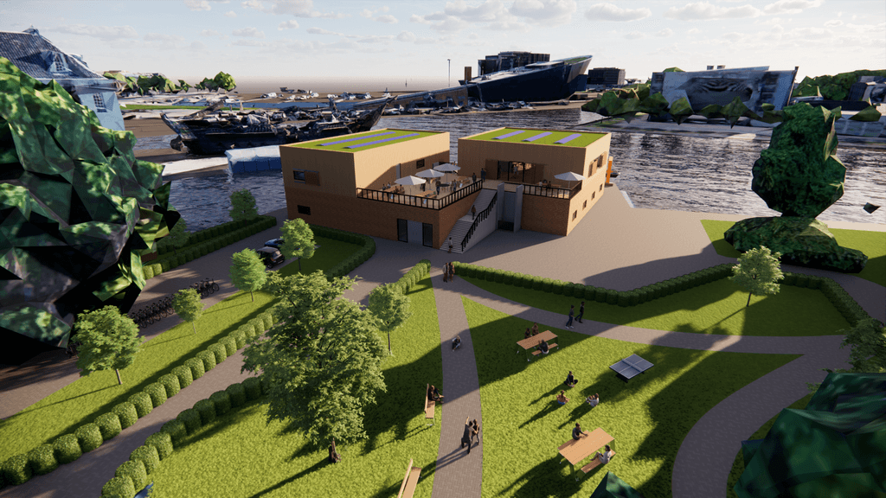
Docking hall meets exhibition space in this home base for Amsterdam's autonomous "Roboats".
View project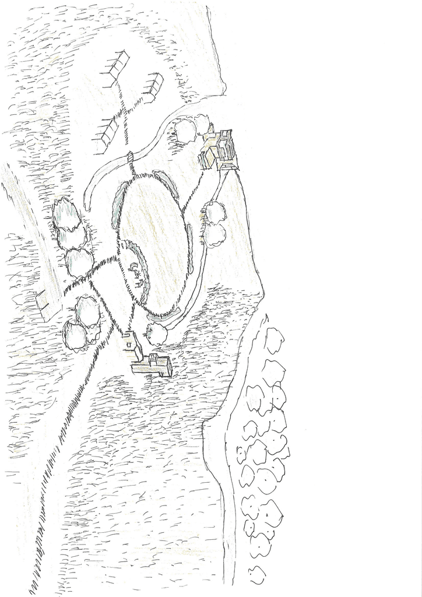
A house and lookout tower, set apart and linked by a path winding through the reed.
View project